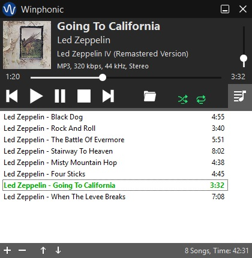
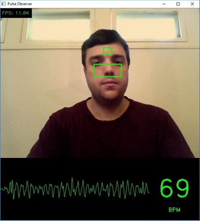
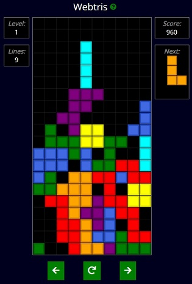
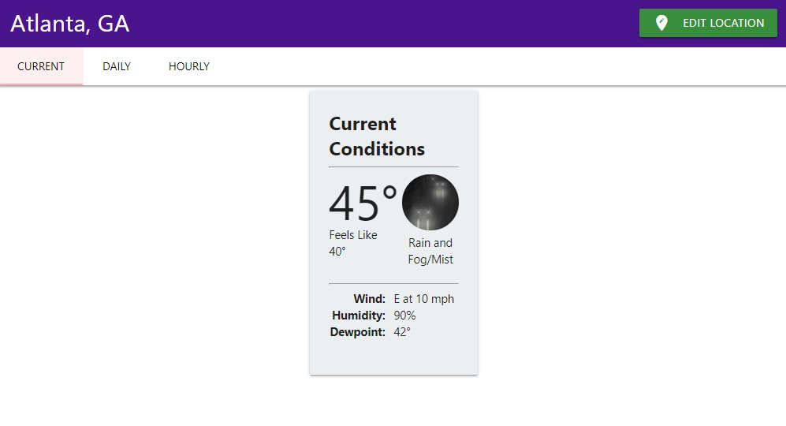
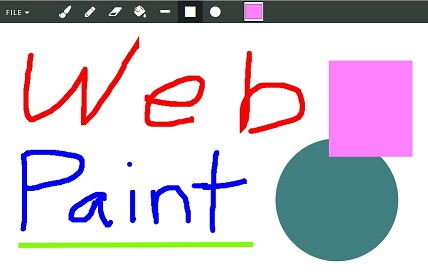

Kevin Perry
I'm a software engineer that just finished a Master's degree in Computer Science from Georgia Tech. My
interests include front-end, back-end,
desktop, mobile, security, UI design, and more.
Check out some of my work below.

Winphonic is an open source, portable, lightweight audio player for Windows. Supports MP3, OGG, ID3 tags, playlists, keyboard shortcuts, and more. The executable is only 200 KB and it uses a very small amount of memory.
Made With: C (and some C++)

Pulse Observer tracks the user's heart rate in real time using a webcam. It detects tiny variations in facial skin color that result from blood flow. It displays the pulse, pulse graph, and regions of interest in a GUI window.
Made With: Python, OpenCV, NumPy, SciPy, Dlib

Webtris is a modern recreation of a classic video game. The game pieces, drop speeds, scoring, and levels are all faithful to the original Tetris on NES.
Made With: HTML, CSS, JavaScript

Weather is a web app for checking the weather forecast of any location in the United States. It shows the current weather conditions, daily forecast, and 7-day hourly forecast. Weather data is retrieved using the National Weather Service API.
Made With: HTML, CSS, JavaScript, Materialize

Web Paint is a simple web app for painting. Includes the following tools: brush, pencil, eraser, paint bucket, line, rectangle, and circle. Allows you to choose the brush size and color. Supports saving files to disk in PNG format.
Made With: HTML, CSS, JavaScript